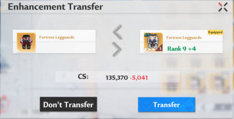

Guide: Stuff
• Les grades d'equipement
Il existe 4 differents grades (ou niveau de rarete) d'equipement obtenable dans le jeu: vert, bleu, violet, orange
Les equipements verts vont de 0 a 2 etoiles d'ameliorations et chaque grade superieur permet d'avoir une etoile max en plus.
(Nous reviendrons sur les etoiles plus tard)
Il est donc primordial, a terme, d'avoir uniquement des equipements dores
• Le niveau d'equipement
Une piece d'equipement peut voir son niveau augmenter pour renforcer ses stats de bases.
Ici on voit la difference des stats entre un equipement niveau zero et niveau 14'
Un equipement peut etre recycle pour recupere 100% des materiaux qui ont permis de monter son niveau et une partie
des materiaux qui ont permis de monter ses etoiles.
Lorsque l'on equipe un nouvel equipement, il est possible (et recommende dans la quasi totalite des cas de le faire)
de transferer les niveau de l'un a l'autre, sans cout, sans perte.
On peut donc considerer que le niveau d'une piece d'equipement est pas reellement pour l'equipement, mais pour son slot:
si un casque est niveau 50, tous les casques le sont.

Lorsque les 8 pieces basiques (nous reviendrons dessus plus tard) sont au meme palier, on gagne un bonus de stats.
Chaque palier est consititue de 5 niveaux (palier 5, 10, 15, ...)
Sur le premier screenshot, on voit que je suis au niveau 10 (palier de 45), et que 3/8 pieces sont au niveau 50
Sur le second, on voit mes stats de bases gagnee pour le palier 45, et le prochain, celui de 50
• Les stats principales et secondaires
Chaque piece d'equipement a 2 stats principales, elles sont les presentes des 0 etoiles et sont toujours les memes
En montant les niveaux d'une piece, 2 nouvelles stats vont apparaitre (les stats secondaires). Elles aussi
sont les memes pour toutes les pieces d'equipement d'un meme slot
Par exemple, pour le brassard, les stats principales sont:
• Attaque
• HP
On peut voir que les 2 premieres ont un +815 et +36720 vert. Ca correspond au gain de stats grace au niveau de l'equipement
A partir de la, en ce qui concerne simplement les niveaux d'equipement, 3 categories apparaissent:
• Les differentes pieces
Il existe 3 categories d'equipements
Il y a 8 pieces basiques, de haut en bas:
• Le casque
• Les épaulettes
• Les gants
• Les brassards
• Le torse
• La ceinture
• Le pantalon
• Les bottes
Parmis ces pieces, on voit les 2 premieres categories:
Les pieces dont les niveaux montent l'attaque:
• Les épaulettes
• Les brassards
• Les gants
• Les bottes
Les pieces qui montent d'autres stats:
• Le casque (il est entre les deux puisque sa stat principale est attaque, mais pas ses stats secondaires)
• Le torse
• La ceinture
• Le pantalon
Il est donc primordial, lorsque l'on monte les niveaux d'equipement d'un palier a un autre, de commencer par les
pieces d'attaques en premier:
• gants, epaulettes, brassards, bottes, puis casque et enfin, torse, ceinture, pantalon
• Les pieces speciales
Il y a 4 pieces speciales. Elles sont speciales parce qu'historiquement elles sont arrivees plus tard dans le jeu,
mais surtout parce qu'elles ont des statisquement aleatoires differentes (on verra ca plus tard).
Enfin, elle utilises des materiaux different pour monter les etoiles ET les niveaux.
Il y'a
• La visière
• La machine de combat
• Le micro-réacteur
• L'exosquelette
Ces pieces sont speciales pour une derniere raison, leurs stats aleatoires sont differentes
• Les stats aleatoires
Les stats aleatoires sont disponibles sur toutes les pieces:
• vertes: 2 stats
• bleues: 3 stats
• violet et orange: 4 stats
• Sur les pieces basiques
Les pieces basiques peuvent avoir une foule de stats aleatoires, de survivabilite, de resistance, d'attaque.
• Survivabilite: HP
• Resistance: Elementaire (Volt, Frost, Flame, Physique) ou generale (seulement nomee, Resistance) qui impacte toutes les autres
• Attaque: Comme pour la resistance, soit Elementaire soit generale (Attaque)
On va se focaliser sur les stats d'attaque puisque c'est ce que 90% des joeurs veulents. Et de toute facon, ce qui
est vrai pour l'attaque est relativement la meme chose pour les autres
Toutes ces stats sont dites flat, cad qu'elles augmentent les stats du perso du montant indique, simplement.
+215 attaque volt veut simplement dire que l'attaque volt du perso est montee de 215. (exemple de statisques aleatoires sur une piece orange)
Bien que l'attaque monte toutes les statistiques elementaires d'un perso, une statistique elementaire est preferable.
La raison est simple, une stats elementaire a une valeur maximum possible bien plus haute. L'ideal restant, évidement, d'avoir l'attaque elementaire souhaitee ET la stats d'attaque normale
Il existe une derniere statistique, le crit, uniquement disponible sur les gants et les bottes.
La stat de crit monte cette stat sur votre personnage:
Quand on clique sur l'icone, on peut y voir ce que ca veut dire. Cela donne un certain %age de chance qu'une attaque
soit critique, et donc fasse plus de degats (+50% par defaut, la stat crite damage dans la colone de droite)
• Monter ses stats aleatoires
Les stats aleatoires peuvent etres augmentees en montant le nombre d'etoiles d'une piece d'equipement: chaque etoile
montera une des 4 stats aleatoirement, d'un montant aleatoire.
Le montant aleatoire est compris entre une valeur minimum et valeur maximum:
Nous avons maintenant les cles de bases pour chasser les meilleures pieces d'equipement:
• Avoir une piece avec de l'attaque. Idealement elementaire + normale, ou seulement elementaire ou seulement normale.
• Monter les etoiles et tomber par chance sur les stats d'attaque
• Avoir de la chance et que les procs (fait de monter une stats) soient bons, cad. proche de la valeur maximum possible.
C'est un processus long et base uniquement sur de la chance.
Voici un exemple d'une piece d'equipement 5* qui a eu:
• 4 procs en frost attack
• 1 proc en attaque
• Bloquer les stats aleatoires
Il existe un moyen d'aider a monter une piece d'equipement a un niveau souhaite: bloquer une des 4 stats lors
d'une augmentation d'etoile
En ayant et utilisant cet objet, on peut choisir la stat a bloquer:
Il faut bien faire attention, s'il on monte plusieurs etoiles d'un coup, a utiliser plusieurs bloqueurs.
Les bloqueurs sont relativement rares, donc utilisez les avec parcimonie.
• Sur les pieces speciales
Les pieces speciales fonctionnent exactement de la meme maniere, mais ont des variantes des stats aleatoires en plus:
• des stats de pourcentage
• de l'attaque alteree (flat)
• de la resistance alteree (flat ou pourcentage)
La visiere est la seule piece qui peut avoir les statisques de crit et alterees
Le micro-reacteur, la machine de combat et l'exosquelettes auront seulement les stats %age en plus
Un mot sur les stats de pourcentages d'attaque
Il existe 2 stats de pourcentage elementaires:
• L'attaque % elementaire
• Les degats % elementaires
C'est un sujet complique, qui necessite que j'explique tres longement la difference entre les deux,
et laquelle choisir dans quelle circonstance, ce que je ferai plus tard.
En attendant, je peux conseiller: Se focaliser sur l'attaque % et pas les degats
Voici la table des valeurs minimum et maximum pour les pieces speciales: